- 버스 이용이 많은 지역
- 노원구내 중고등학교 주변 버스 이용량
- 이용량이 많은 노선들의 차내혼잡도
- 차내혼잡도가 많은 노선들을 다익스트라 알고리즘으로 노드 사이끼리의 최단거리로 새 노선추출
프로젝트 정보
카테고리: 논문
논문 주제명: 서울시 청소년들을 위한 교통 데이터 분석 기반의 단거리 버스 노선 선정
프로젝트 진행 날짜: 2022.06 ~ 2022.12
타과에서 진행한 학부융합 프로그램으로 한 가지 주제를 정하여 그에 대한 연구를 진행하고 알아주는 기업의 분들이 오셔서
듣고 평가 및 피드백을 해주셨던 프로그램이였습니다.
대한민국의 인구수는 대부분 수도권지역에 몰려있습니다. 그만큼 교통편도 다른 지역에 비해 많고 개선되어 있는 점이 많습니다.
그 중 대부분은 직장인들이기에 출퇴근에 맞춰진 다람쥐버스가 있습니다. 이 다람쥐버스에서 아이디어를 착안하여 학생들에게 초점을 두어 등교하는 학생들에게 편의를 제공하는 것을 목적으로 하였습니다.
그 중 대부분은 직장인들이기에 출퇴근에 맞춰진 다람쥐버스가 있습니다. 이 다람쥐버스에서 아이디어를 착안하여 학생들에게 초점을 두어 등교하는 학생들에게 편의를 제공하는 것을 목적으로 하였습니다.
✔ 분석 내용:
✔ 사용 언어:
Python
✔ 라이브러리:
numpy, pandas, matplot
✔ 팀 인원수:
4
PPT
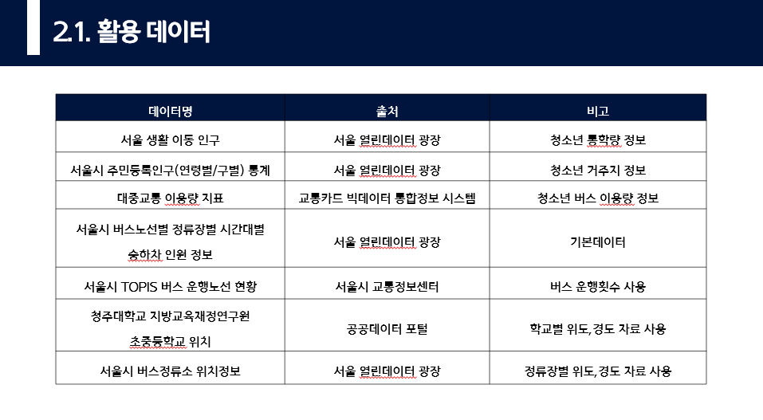
1
서울시민에 대한 생활이동인구, 주민등록인구, 대중교통 이용량 지표를 통해 새로운 노선을 제안할 행정구역을 선정하고,
승하차 인원정보와 버스운행 노선 현황을 통해 차내혼잡을 판단할 지표를 구함으로써 차내 혼잡을 완화할 노선구간을 추출했습니다.
학생들의 등교 편의가 목적이기에 학교 인근에 위치한 정류장을 대상으로 한정하여 학교들의 위치와 버스정류장 위치정보를 활용했습니다.

2
새로운 버스 노선의 대상이 되는 구를 특정하기 위해 청소년 인구수가 많으면서, 출근 및 등교시간인 7~8시에 대중교통 이용량이 많고,
7~8시에 거주지에서 근무지 혹은 학교로 이동하는 인구수가 많은 구를 선별했습니다.
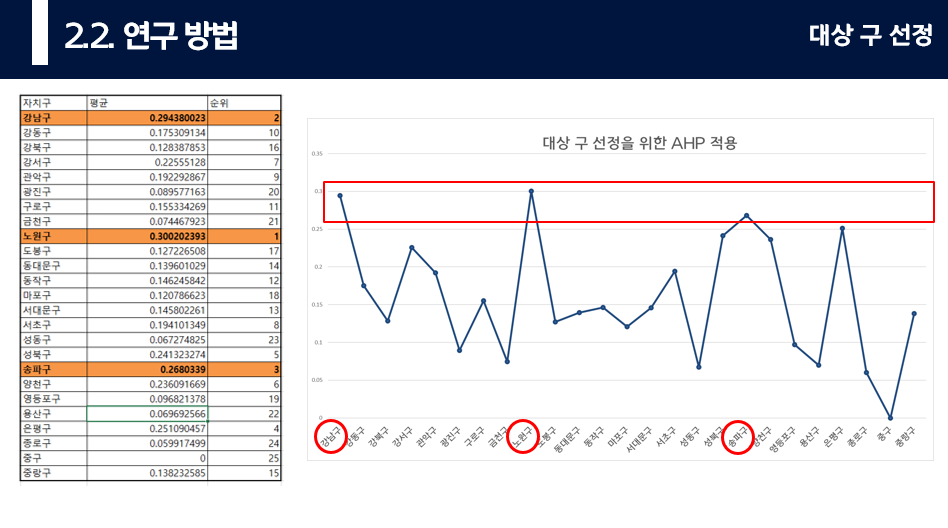
3
앞에 언급한 자치구별 청소년 인구수, 이동인구수, 대중교통 이용량에 대한 통계자료에 대해 AHP기법을 사용해
가중치를 적용한 자료이며, 상위 3개 자치구를 주황색으로 표시했습니다.
1위 노원구, 2위 강남구, 3위 송파고
AHP기법은 평가기준이 다각적이며 복잡한경우에 이를 계층화하여 쌍대비교를 통해 상대적 중요도를 설정하는 기법입니다.
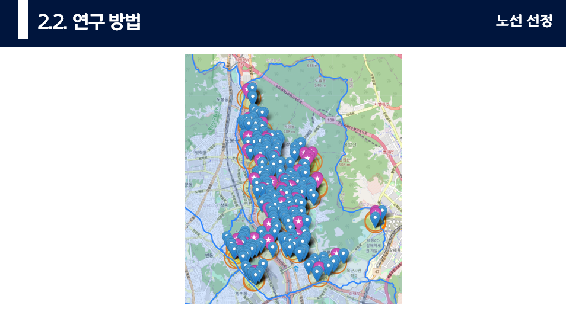
4
노선의 종점을 하차량이 많은 곳 중, 고등학교 주변 정거장으로 선정하기 위해서 노원구에 속한 중고등학교 주변400m
(도보 10분내외)내에 있는 정거장들을 추려내 표시한 자료입니다.
자주색이 노원구이며 노란원이 학교반경 400m를 표시, 파란색마커는 학교반경 400m이내 위치한 정거장들을 표시했습니다.
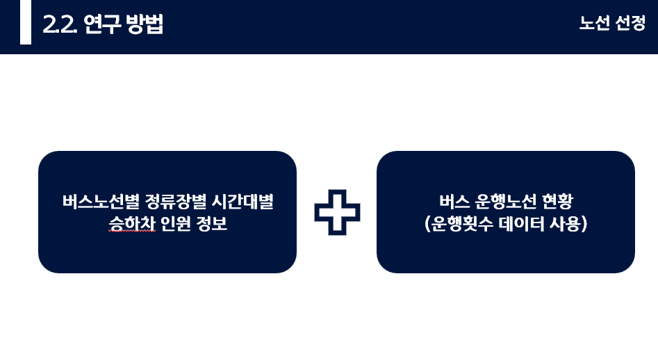
5
버스 승하차 인원정보 데이터 중 2017년부터 2022년 7월까지의 7~8시에 해당하는 데이터를 사용해 통계를 냈으며,
방학기간에 속하는 1월과8월 데이터는 제외했습니다.
1일 버스 운행횟수를 기반으로 평일, 공휴일, 토요일 연간일수를 고려해 연간 운행횟수를 구한 후 각 버스노선별 정류장별 시간대별
승하차 인원의 일평균 데이터를 구했습니다.
이전에 선택한 335개의 정류장과 일치하는 데이터 중에서 7~8시 데이터가 모두 상위 20위내 데이터에 속하는 정류장을 선별한 결과
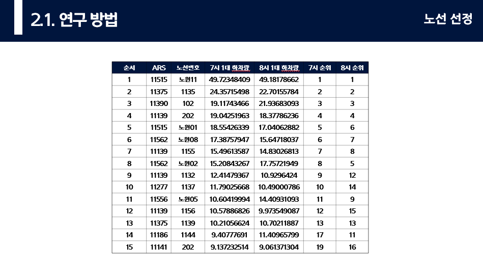
6
정거장 이름과 해당 정거장을 지나는 노선의 번호도 함께 나타내어 정거장에 대한 하차 수요가 확실하게 보장되는 정거장을 선택했습니다.
중복을 제외하고 총 14개의 버스노선이 선택되었으며 해당 노선들에 대한 전체 노선의 승하차량을 구해 혼잡구간을 추출했습니다.
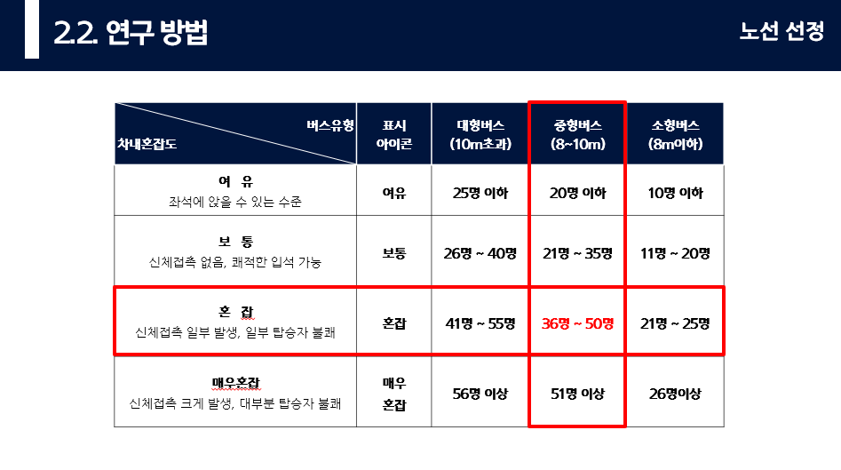
7
차내혼잡도: 쾌적성과 편의성 등 교통수단 서비스 수준의 판단기준
정류장별 최대 차내 승객수를 차량 승차 정원수로 나눈 값으로 버스의 크기에 따라 기준으로 적용했습니다.
교통정보센터 버스정보팀에서는 일반적인 중형 시내 버스 기준으로 차내 승객이 20명 이하면 여유, 35명 이하면 보통, 36명 이상일때 혼잡으로 정의하고 있었습니다.
따라서, 해당 연구에서는 노선별 정류장별 재차인원이 36명 이상일때 혼잡하다고 판단했습니다.
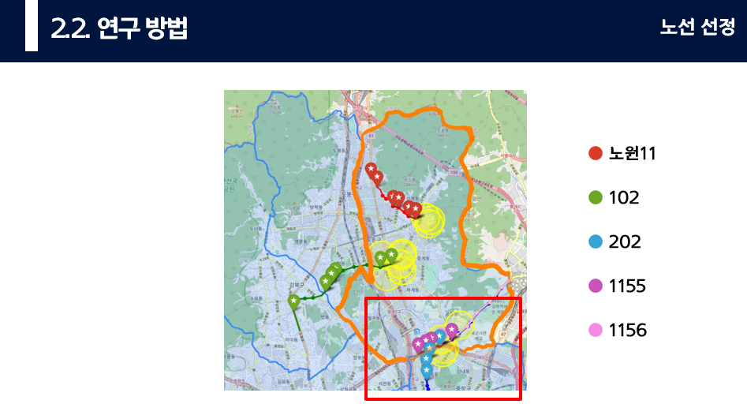
8
주황색으로 표시한 행정구역이 노원구.
노원11번의 혼잡구간을 빨간색,
102번의 혼잡구간을 초록
202번의 혼잡구간을 파랑
1155번의 혼잡구간을 보라
1156번의 혼잡구간을 분홍
별모양 마커로 표시한 점은 각 노선중에서 승하차량이 높게 나타나는 정류장
노란색 원은 혼잡구간의 끝점 인근에 위치한 중고등학교 반경 400m를 나타냅니다.
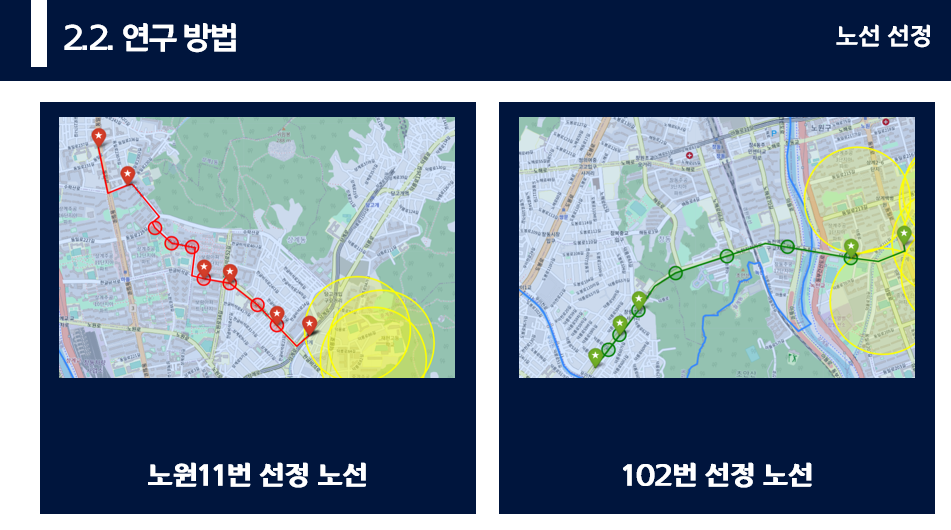
9
노원11번과 102번 버스는 한 반향에 대해서만 수요가 있었기 때문에, 반대쪽 방향은
미정차 구간으로 공차회송하였습니다.
공차회송이란 차고지에서 운행한 버스가 다시 차고지로 돌아갈때 정차하지않고 이동하는 것으로
출퇴근 시간과 같이 단방향 수요가 많을때 버스의 배차간격을 줄일 수 있어 혼잡시간대에 한정된 자원으로
공급을 늘리 수 있기 때문에 효율적으로 대중교통을 이용할 수 있도록 하는 방안입니다
공차회송 노선은 다익스트라 알고리즘을 이용해 선정하였으며 다음과 같습니다.
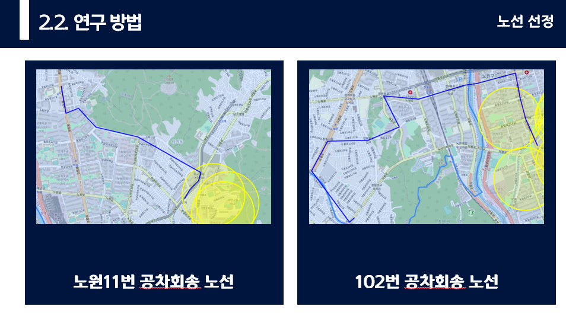
10
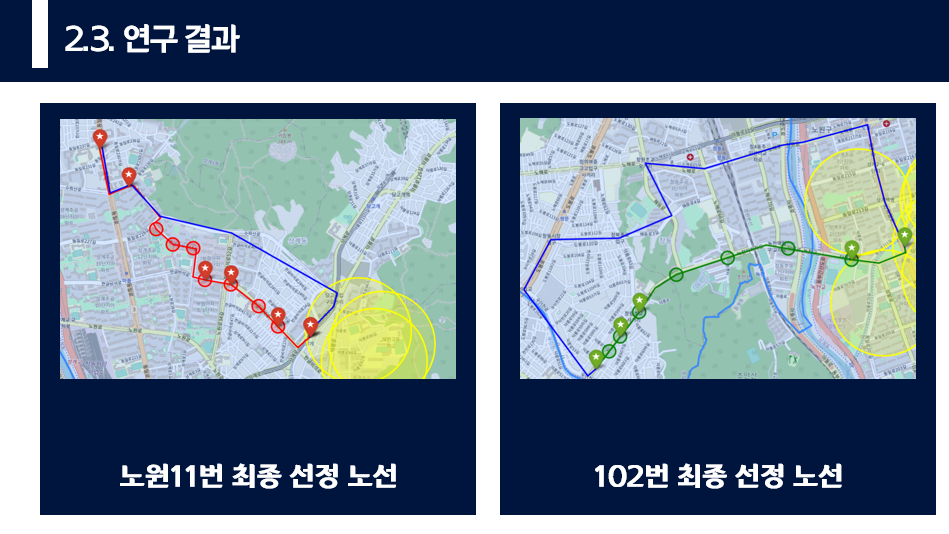
11
최종적으로 선정된 노선이며, 공차회송 노선입니다.
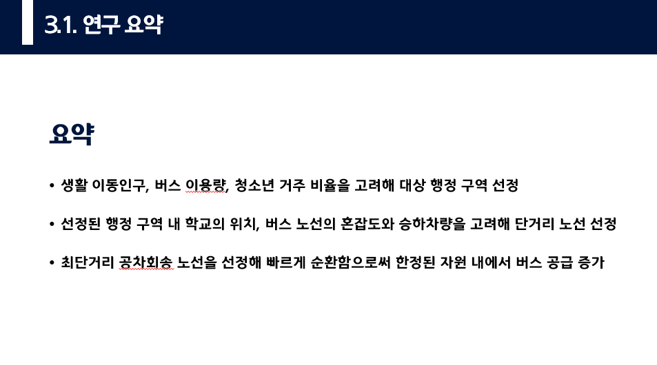
12